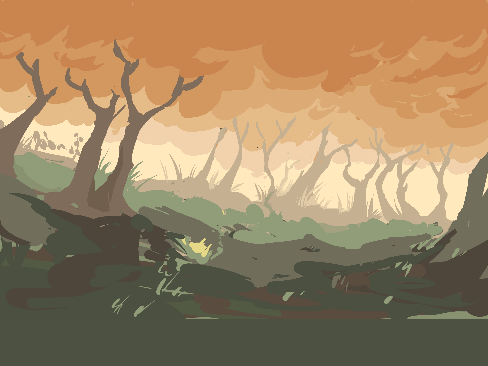
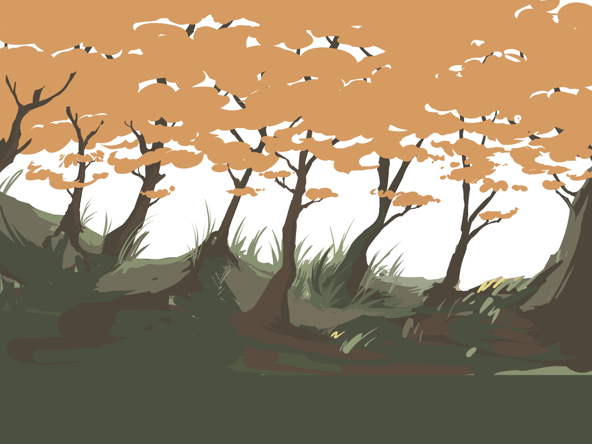
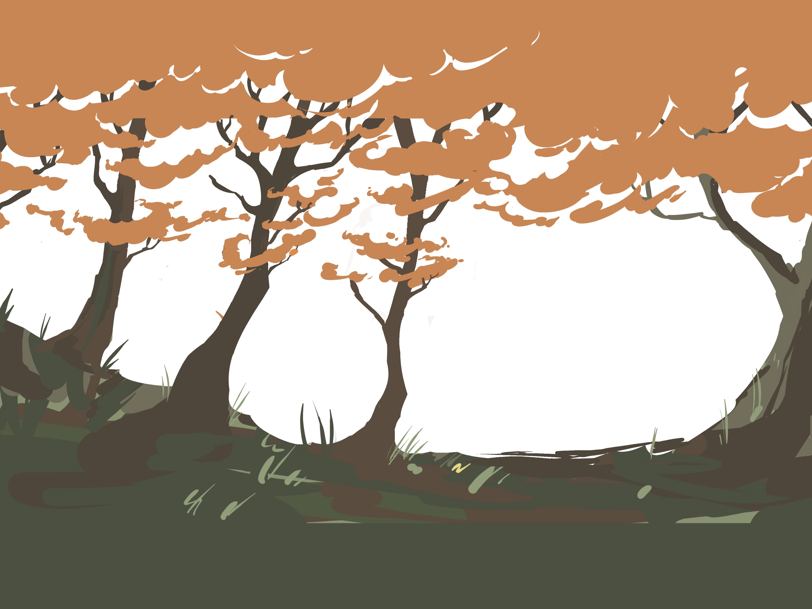

Tunzkin
Tunzkin - It's an RPG-based game, deep in the depths of an ancient and mysterious forest lie secrets that can change the fate of the entire world. In this exciting 2D RPG, you will become a hero chosen to restore balance to the natural world. Forest dwellers - from friendly spirits to dangerous monsters - are waiting to meet you at every turn. Explore dense forest thickets, overcome ancient ruins, solve the mysteries of nature and participate in exciting battles with forest creatures. As you progress through the game, your character will develop, discovering unique abilities and magic associated with the forest. The plot is filled with unexpected twists and moral choices that will affect the ending of the adventure



m